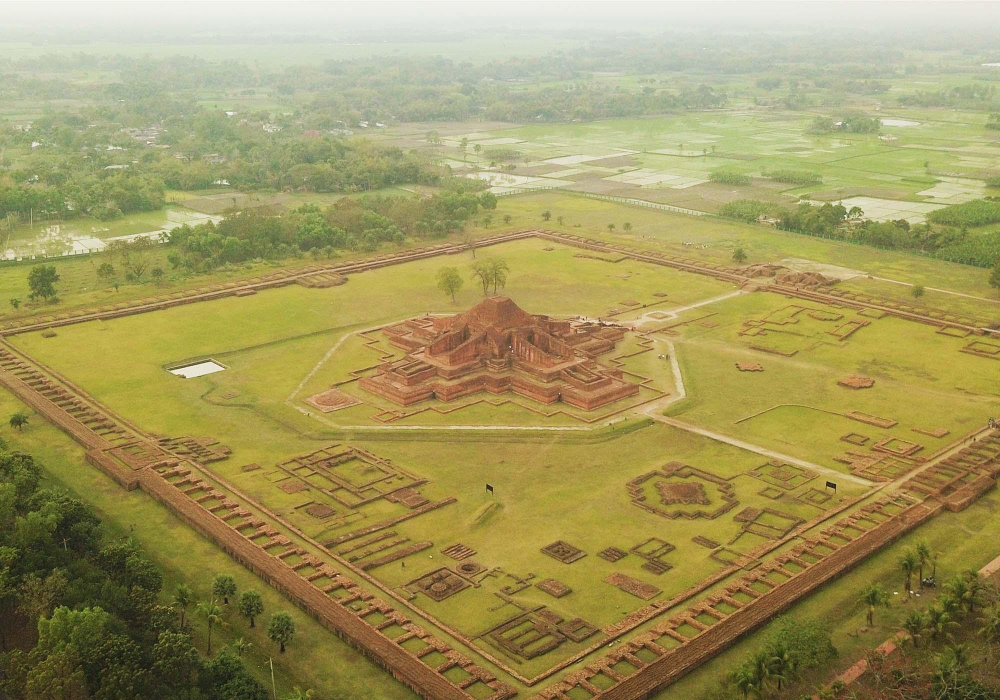
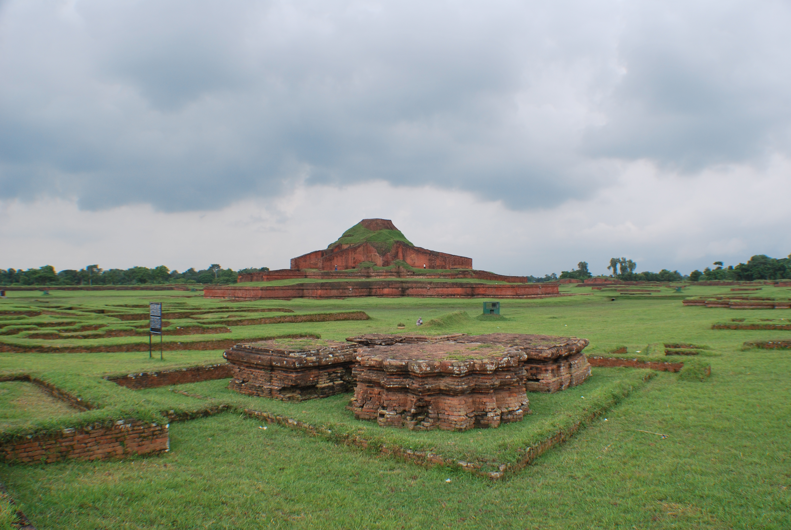
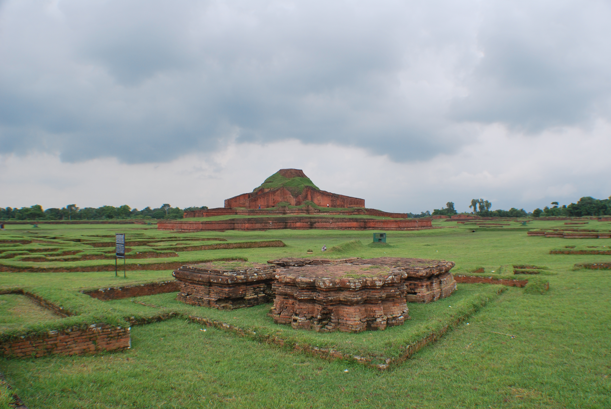
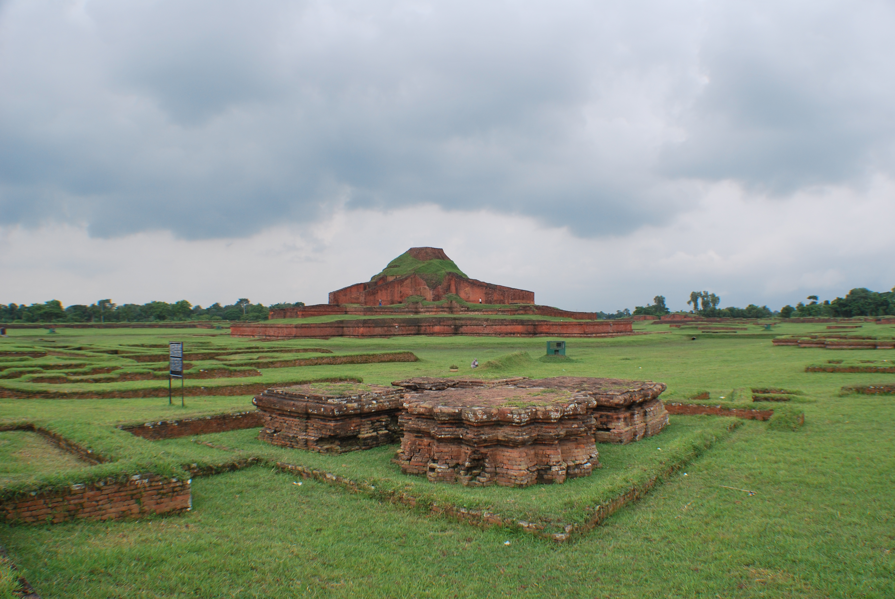
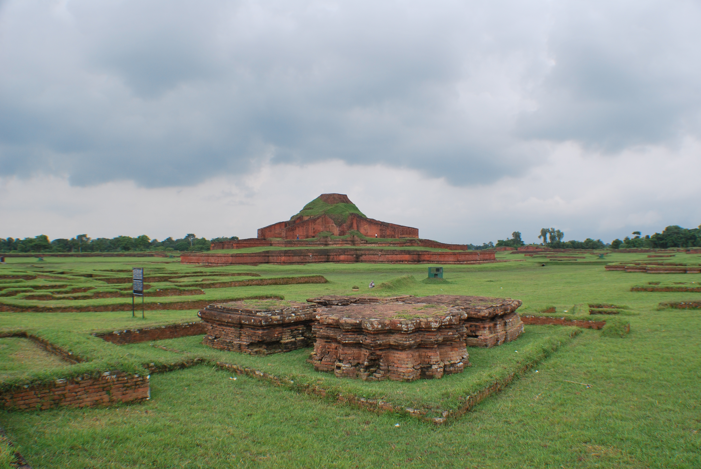

 



Somapura Mahavihara (Bengali: সোমপুর মহাবিহার Shompur Môhabihar) in Paharpur, Badalgachhi Upazila, Naogaon District, Bangladesh is among the best known Buddhist viharas in the Indian Subcontinent and is one of the most important archaeological sites in the country. It is also one of the earliest sites of Bengal, where significant amount of Hindu statues were found. It was designated as a UNESCO World Heritage Site in 1985. It dates from a similar time period to the nearby Halud Vihara and to the Sitakot Vihara in Nawabganj Upazila of Dinajpur District.[1]
A number of monasteries grew up during the Pāla period in ancient India in the eastern regions of the Indian subcontinent, comprising Bengal and Magadha. According to Tibetan sources, five great Mahaviharas stood out: Vikramashila, the premier university of the era; Nalanda, past its prime but still illustrious; Somapura Mahavihara; Odantapurā; and Jaggadala.[2] The monasteries formed a network; "all of them were under state supervision" and there existed "a system of co-ordination among them ... it seems from the evidence that the different seats of Buddhist learning that functioned in eastern India under the Pāla were regarded together as forming a network, an interlinked group of institutions," and it was common for great scholars to move easily from position to position among them.[3] Xuanzang of China was a noted scholar who resided at the Somapura Mahavihara (the largest monastery in ancient India), and Atisa traveled from Bengal to Tibet to preach Buddhism. The earliest form of the Bengali language began to the emerge during the eighth century. The excavation at Paharpur, and the finding of seals bearing the inscription Shri-Somapure-Shri-Dharmapaladeva-Mahavihariyarya-bhiksu-sangghasya, has identified the Somapura Mahavihara as built by the second Pala king Dharmapala (circa 781–821) of Pāla Dynasty.[4] Tibetan sources, including Tibetan translations of Dharmakayavidhi and Madhyamaka Ratnapradipa, Taranatha's history and Pag-Sam-Jon-Zang, mention that Dharmapala's successor Devapala (circa 810–850) built it after his conquest of Varendra.[4] The Paharpur pillar inscription bears the mention of 5th regnal year of Devapala's successor Mahendrapala (circa 850–854) along with the name of Bhiksu Ajayagarbha.[4] Taranatha's Pag Sam Jon Zang records that the monastery was repaired during the reign of Mahipala (circa 995–1043 AD).[4] The Nalanda inscription of Vipulashrimitra records that the monastery was destroyed by fire, which also killed Vipulashrimitra's ancestor Karunashrimitra, during a conquest by the Vanga army in the 11th century. Over time Atisha's spiritual preceptor, Ratnakara Shanti, served as a sthavira of the vihara, Mahapanditacharya Bodhibhadra served as a resident monk, and other scholars spent part of their lives at the monastery, including Kalamahapada, Viryendra and Karunashrimitra.[4] Many Tibetan monks visited the Somapura between the 9th and 12th centuries.[4] During the rule of the Sena dynasty, known as Karnatadeshatagata Brahmaksatriya, in the second half of the 12th century the vihara started to decline for the last time.[4] One scholar writes, "The ruins of the temple and monasteries at Pāhāpur do not bear any evident marks of large-scale destruction. The downfall of the establishment, by desertion or destruction, must have been sometime in the midst of the widespread unrest and displacement of population consequent on the Muslim invasion."[5] A copperplate dated to 159 Gupta Era (479 AD) discovered in 1927 in the northeast corner of the monastery, mentions donation of a Brahmin couple to Jain Acharya Guhanandi of Pancha-stupa Nikaya[6] at Vata Gohli, identifiable as the neighbouring village of Goalapara[7]
The quadrangular structure consists of 177 cells and a traditional Buddhist stupa in the centre. The rooms were used by the monks for accommodation and meditation. In addition to the large number of stupas and shrines of various sizes and shapes, terracotta plaques, stone sculptures, inscriptions, coins, ceramics etc. have been discovered. The site houses the architectural remains of a vast Buddhist monastery, Somapura Mahavihara, covering 27 acres (11 ha). It was an important intellectual centre for Dharmic Traditions such as Buddhists (Buddha Dharma), Jains (Jaina Dharma) and Hindus (Sanatana Dharma) alike.[8] The 21 acre (85,000 m²) complex has 177 cells, viharas, numerous stupas, temples and a number of other ancillary buildings.[9] The outside walls with ornamental terracotta plaques still display the influence of these three religions.
The purpose of this central structure at the midst of the courtyard remains unsolved since its discovery. Hence, most of the debates generated hitherto on the architecture of Sompur Mahavihara are cantered on the identification its missing superstructure. The reason may be manifold, but the most important one is the non-availability of substantial amount of first-hand resource including a comprehensive architectural documentation at the disposal of the researchers. There are different arguments regarding the terminating top of the central structure of Sompur Mahavihara